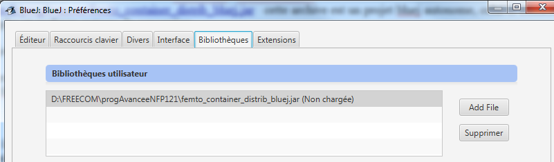
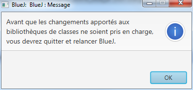
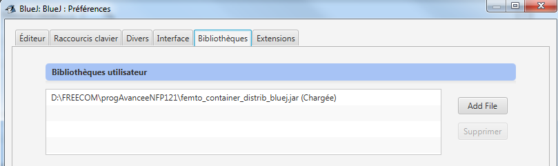

- Specifications par Eric Evans et Martin Fowler https://www.martinfowler.com/apsupp/spec.pdf
- Rule Object par Ali Arsanjani https://www.hillside.net/plop/plop2k/proceedings/Arsanjani/Arsanjani.pdf
- Le Patron Specification pour la gestion de vos règles métiers par Nicolas Lecoz, sur son blog ici
- The Rules Design Pattern par Michael Whelan https://www.michael-whelan.net/rules-design-pattern/
Préambule BlueJ : import de la librairie femtoContainer, si ce n'est déjà fait
- Téléchargez femtoContainer.jar
- Ajouter cette archive à votre projet tp_rules, Menu Outils, item Préférences, onglet Bibliothèques
 - Redémarrez BlueJ
 - Vérifiez à nouveau Menu Outils, item Préférences, onglet Bibliothèques, l'archive doit être chargée

Préambule : Les
règles métiers changent régulièrement. Comment
prendre en compte ces changements tout en assurant les systèmes maintenables,
réutilisables et extensibles ? Comment représenter
des règles, pour une plus grande réutilisation et assurer une maintenabilité
plus facile ?
Ces règles sont généralement implémentées dans les méthodes d'un objet métier. Elles font référence à d'autres objets métier, et prennent souvent la forme d'instructions "si-alors-sinon", disséminées dans le code devenant de fait, difficile à faire évoluer, à maintenir...
Les patrons de
cet énoncé rassemblent les règles métiers "au même endroit" d’un
système et ainsi, fournissent une première réponse à une meilleure
réutilisation et maintenance. Les patrons Specification, Command et
Rule permettent de définir une suite de règles de type si-alors-sinon :
Si la spécification est satisfaite alors la commande est exécutée.
Le patron Specification
en question 1 permet de représenter la ou les conditions à satisfaire,
Le patron Command
en question 2 représente la ou les commandes à exécuter,
Enfin, le patron Rule en question 3
exprime une règle ou une suite de règles de type:
Si la spécification est satisfaite alors
la commande
est exécutée.
 Le patron Composite/Specification
Le patron Composite/Specification
Ce patron permet représenter
une condition à satisfaire. Une condition peut être construite à l'aide des
opérateurs logiques tels que le Et (And), le Ou (Or), la négation
et d’autres opérateurs comme OnlyOne(Une et une seule des conditions est
satisfaite) ainsi que OneOf(une des conditions est satisfaite), None aucune des conditions est satisfaite etc...
package question1;
/** L'interface SpecificationI.
* @param <E> L'entité métier, sur laquelle porte la condition.
*/
public interface SpecificationI<E>{
/** La condition à satisfaire.
* @param e le paramètre de la méthode
*/
public abstract boolean isSatisfiedBy(E e);
/** Cf. le Patron interpreter, ici reflété par toString().
* @return une forme lisible
*/
public abstract String toString();
}
Question1-1) Complétez les différentes classes du composite Specification, la
classe de tests unitaires ne doit pas être simplifiée mais enrichie et s'exécute sans
erreur.
Question1-2)
Question1-3)
Ce patron permet de représenter
une commande (Command) ainsi qu’une suite de commandes (MacroCommand) à exécuter.
/** La commande à exécuter.
* r est mutable, dont le contenu est éventuellement modifié par
* l'exécution de la commande
* @param <E> l'entité métier
* @param <R> le type de la donnée et du résultat
*/
public interface CommandI<E,R>{
/** L'exécution de la commande.
* @param r l'entité transmise
* @return le résultat retourné
*/
public R execute(E e, R r) throws Exception;
/** Patron interpreter via toString.
* @return une réprésentation de la commande
*/
public String toString();
}
Question2-1) Complétez les différentes classes du composite Command, la classe de tests unitaires ne doit pas être modifiée et s'exécute sans erreur.
Question2-2)
Question2-3)
 Le patron Rule
Le patron Rule
Le patron Rule permet d’exprimer une règle ou une suite de
règles de type :
if (specification.isSatisfiedBy(e)) then return command.execute(r) else return r
dans laquelle specification est une instance du composite Specification issue de la question 1
et command est une instance du composite de la question2
package question3;
/** La classe Règle.
* @param <E> La classe de l'entité sur laquelle porte la condition/specification
* @param <R> la classe de la donnée et du résultat
*/
public interface RuleI<E,R>{
/**
* Exécution d'une règle de type if/then.
* @param e l'entité sur laquelle porte la condition
* @param r la donnée transmise
* @return si la condition n'est pas satisfaite r est retourné,
* sinon le résultat de l'exécution de la commande est retourné
*/
public R execute(E e,R r) throws Exception;
}
Note
pre_execute:[e/3,r/0] if(estSuperieur_a_0)then(MacroCommand(inc/inc))post_execute:[e/3,r'/2]
pre_execute:[e/5,r/2] if(estSuperieur_a_0)then(MacroCommand(inc/inc))post_execute:[e/5,r'/4]
pre_execute:[e/5,r/0] if(estSuperieur_a_0)then(MacroCommand(inc/inc))post_execute:[e/5,r'/2]
pre_execute:[e/5,r/2] if(estSuperieur_a_0)then(MacroCommand(inc/inc))post_execute:[e/5,r'/4]
pre_execute:[e/5,r/4] if(estSuperieur_a_0)then(MacroCommand(inc/inc))post_execute:[e/5,r'/6]
Pour la dernière ligne, nous avons en entrée l'entité e=5 et r=4, en sortie nous avons e/5 et r'=6,
soit le résultat r' de l'exécution de la règle if(e>0)then r'=r+2
Question3-1)
Question3-2) Proposez une implémentation complète de la classe ReflectRule.
Question3-3)
Question3-5) Des exemples se trouvent dans plusieurs paquetages, complétez l'exemple de votre choix en ajoutant certaines règles ou créez votre propre exemple:
- exemple_conges : un exemple de calcul fantaisiste des congés d'un employé de mairie ...
Note sur les congés: Les règles des congés pour un agent territorial ont été mises en oeuvre par Mengsi WU, étudiante en 2ème année à l'IIE/Cnam en 2018, au total 70 Règles, son rapport est ici, il contient également plusieurs exemples...
- exemple_kindergarten : extrait du github, auteur Marcin Koziarz, soit un jardin d'enfants, avec johny, max et
jenny... des jouets préférés, des règles et des interrogations, cet exemple est repris
avec le fameux outil femtoContainer ce qui permet l'injection de nouvelles règles, sans modifier le code initial...
- exemple_alcool : extrait du github,
auteur Marc Bouvier, soit les règles de consommation d'alcool au bar,
en France, aux Etats-Unis et en Allemagne, cet exemple est repris
avec l'extraordinaire outil femtoContainer ce qui permet l'injection de
nouvelles règles, sans modifier le code initial...
- exemple_instruction
: un prototype d'écriture de code java par injection, l'exécution du
programme est liée au fichier de configuration, une modification
du fichier de configuration engendre une nouvelle exécution du code
Java qui est injecté, c'est un prototype perfectible (serait-ce une
tentative de génération de code automatique ? ou bien un exercice de
style...)
- exemple_VES
au Cnam recenserait les cas de jurisprudence, un
exemple de ce qui pourrait être mis en oeuvre avec le patron
specification, une variabilité des règles est aussi attendue, ne prenez
qu'un seul ou une partie d'un dipôme comme la licence d'informatique, la totalité des
cas serait bien trop
chronophage dans le contexte d'un TP.
 Usage de femtoContainer
Usage de femtoContainer
Les règles sont maintenant injectées à l'aide d'un fichier de configuration et surtout grâce à l'incroyable outil femtoContainer, le chargement du fichier de configuration s'effectue ici depuis la classe de Tests
La configuration femtoContainer, cf. fichier READEME.TXT, l'cône document en haut à gauche
|
bean.id.1=i
i.class=java.util.concurrent.atomic.AtomicInteger bean.id.2=inf10 # TestsRulesWithFemtoContainer$LessThan identifie le fichier.class associé à la classe interve et statique LessThan inf10.class=question4.TestsRulesWithFemtoContainer$LessThan inf10.property.1=operand inf10.property.1.param.1=10 bean.id.3=inc1 inc1.class=question4.TestsRulesWithFemtoContainer$IncCommand inc1.property.1=delta inc1.property.1.param.1=1 bean.id.4=inc2 inc2.class=question4.TestsRulesWithFemtoContainer$IncCommand inc2.property.1=delta inc2.property.1.param.1=2 bean.id.5=inc inc.class=question2.MacroCommand inc.property.1=commands inc.property.1.param.1=inc1 inc1 #inc.property.1.param.1=inc2 inc2 bean.id.6=rule1 rule1.class=question3.Rule rule1.property.1=specification rule1.property.1.param.1=inf10 rule1.property.2=command rule1.property.2.param.1=inc |
Question4-1)
Question4-2)
Question4-3) Contribuez en enrichissant la base d'exemples de l'usage de femtoContainer pour les auditeurs de cette unité, votre exemple avec votre accord sera sur le forum
Question4-4)